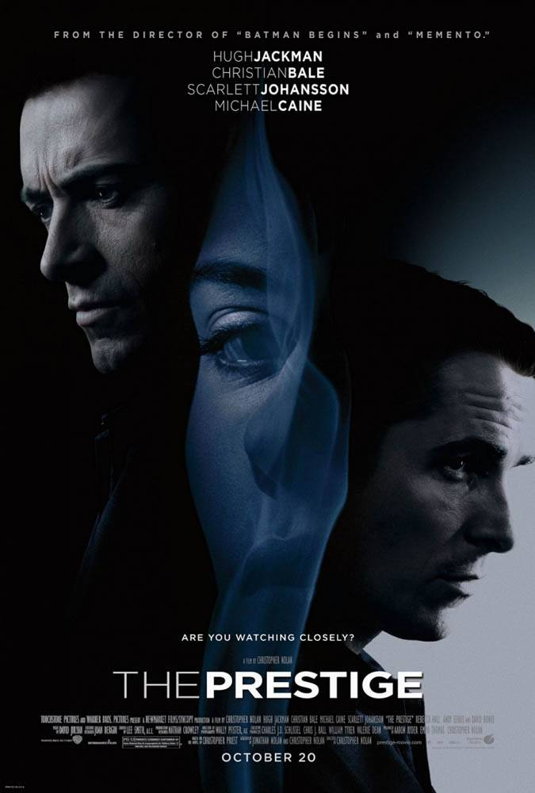

In 1890s London, Robert Angier and Alfred Borden work as shills for a magician under the mentorship of John Cutter, an engineer who designs stage magic. During a water tank trick, Angier's wife Julia fails to escape and drowns. Angier, devastated, accuses Borden of using a riskier knot, causing her death. When Angier asks Borden which knot he used, Borden claims not to know. The two become bitter enemies.
Angier and Borden launch their own magic careers, with Angier working with Cutter, and Borden with the mysterious Fallon. Angier sabotages one of Borden's performances when he slips a real bullet into Borden's pistol during a bullet-catch trick, resulting in Borden losing two of his fingers. Borden reciprocates by sabotaging Angier's disappearing bird act, killing the bird on stage and injuring a volunteer from the audience. Borden develops a trick he calls the Transported Man, in which he appears to travel instantly between two wardrobes on opposite ends of the stage. Unable to discern Borden's method, Angier hires a double, Gerald Root, to perform his own version of the trick. The imitation is a greater success, but Angier is dissatisfied, as he ends the trick hidden under the stage while Root basks in the applause. Root threatens to blackmail Angier and Cutter after being approached by Borden.